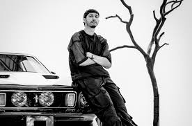
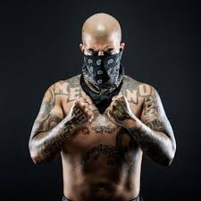

UNDERGROUND TEAM
EN ESTA PAGINA AGRADECEMOS MUCHISIMO SU APOYO Y AGRADECEREMOS MUCHISIMO SI PUEDEN DAR SU APOYO PARA SEGUIR ACTUALIZANDOLA
ESPEREMOS QUE DISFRUTEN DE LA PAGINA!
PARA MAS INFORMACION NUESTRO INSTAGRAM
EN ESTA PAGINA AGRADECEMOS MUCHISIMO SU APOYO Y AGRADECEREMOS MUCHISIMO SI PUEDEN DAR SU APOYO PARA SEGUIR ACTUALIZANDOLA
ESPEREMOS QUE DISFRUTEN DE LA PAGINA!
PARA MAS INFORMACION NUESTRO INSTAGRAM
| INICIO | GENEROS DE MUSICA | MERCANCIA | ARTISTAS | VIDEOCLIPS |
|  | Su nombre completo es Luis Ernesto Vega Carvajal, y nació en 2003, en La Paz, Baja California Sur. Desde muy pequeño, la música siempre estuvo presente en la vida del joven artista. Creció rodeado de sonidos como el regional mexicano y, con el tiempo, comenzó a escribir sus propias canciones. Antes de lanzarse como solista, Neton ya estaba marcando su nombre en la industria. Empezó a hacerse famoso como compositor dentro de los corridos tumbados, trabajando con artistas como Peso Pluma, Natanael Cano y Tito Double P. |
Con la creciente popularidad de los cantantes de corridos tumbados, seguro ya escuchaste canciones como Giza o Elvira. ¿Pero sabes quién es Oscar Maydon, la voz detrás de esos temazos? Este joven cantante de la escena regional mexicana ha logrado abrirse paso gracias a sus colaboraciones de peso. Por cierto, una canción que ha puesto su nombre en alto este año es Tu Boda, en colaboración con Fuerza Regida.Oscar Maydon inició su carrera compartiendo sus primeras canciones en redes sociales y plataformas como YouTube. Logró darse a conocer en 2020, al publicar el tema De La Nació. Eventualmente, eso le permitió firmar con el sello Rancho Humilde, uno de los más influyentes en la escena de los corridos tumbados. A través de Rancho Humilde, tuvo la oportunidad de colaborar por primera vez con Natanael Cano en la canción La Noche Empieza, lanzado en 2021. Pero su primer lanzamiento bajo este sello fue El Instagram, ese mismo año. |
 |
Ricardo Hernández se unió al sello discográfico Del Records en 2017. A partir de entonces, ha escrito temas sobre el CDN y su brazo armado: La Tropa del Infierno Cantantes y agrupaciones mexicanas como Peso Pluma, Natanael Cano, Junior H y Fuerza Regida han popularizado los narcocorridos a nivel internacional. Sus composiciones musicales se caracterizan por el contenido explícito de las letras y por los instrumentos de cuerda y viento que acompañan la lírica. Si bien este tipo de canciones surgieron del regional mexicano, con el paso de los años se han ido diversificando hasta integrarse al género urbano. Aunque la cantidad de exponentes es menor, dentro de este estilo destaca un artista que es conocido por tener múltiples temas sobre el Cártel del Noreste, organización criminal que, como su nombre lo indica, opera al norte de México. |
 |
Gustav Elijah Åhr (1 de noviembre de 1996 – 15 de noviembre de 2017), o más conocido por su alias artístico Lil Peep, fue un rapero, cantante, compositor, y productor musical estadounidense, el cual, era reconocido por tener un estilo emocional en sus melodías y una fuerte influencia emo Lil Peep falleció el 15 de noviembre de 2017 a la edad de veintiún años, por una sobredosis accidental de Fentanilo, en el bus en el que viaje Nació el 1 de noviembre de 1996 en Pennsylvania y creció en Long Island, Nueva York. Sus padres eran graduados de Harvard que se divorciaron cuando él era un adolescente. La madre de Åhr, Liza Womack es maestra de primer grado y su padre es un profesor universitario Åhr asistió a Long Beach High School en Lido Beach, Nueva York, a la que rara vez asistió a pesar de tener buenas calificaciones y estuvo en la lista de decanos durante el tiempo que asistió. Más tarde abandonó la escuela secundaria y tomó cursos en línea para obtener su diploma. Poco después, comenzó a publicar su música en YouTube y SoundCloud. Cuando Åhr tenía 17 años, se mudó a Los Ángeles para buscar una carrera en la música. En el 2015, Åhr lanzó su primer mixtape, Lil Peep Part One, que generó 4.000 reproducciones en su primera semana. Poco después, lanzó su primera obra extendida, Feelz, y otra mixtape, Live Forever En 2016, Åhr lanzó dos mixtapes de larga duración; Crybaby y Hellboy. El 2 de junio de 2017, Åhr anunció su álbum debut, Come over when you're sober, a través de Instagram. El álbum sería supuestamente lanzado el 11 de agosto de 2017. Después de un ligero atraso, el álbum fue lanzado finalmente el 15 de agosto de 2017. Åhr anunció su gira Come Over When You're Sober para promocionar el álbum. La gira comenzó el 2 de agosto de 2017 y estaba programada para finalizar el 17 de noviembre de 2017, pero fue interrumpida por dos días debido a su muerte. |
Jahseh Dwayne Onfroy (Plantation, Florida, Estados Unidos), más conocido por su nombre artístico XXXTentacion, (también conocido simplemente como X o Young Dagger Dick), fue un trapero estadounidense de Lauderhill, Florida. Jahseh Dwayne Onfroy nació el 23 de enero de 1998 en Plantation, Florida y creció en Pompano Beach y Lauderhill, Florida. Es de ascendencia egipcia, india, alemana, jamaicana e italiana.1 Onfroy subió su primera canción como XXXTentacion a su cuenta de SoundCloud en 2014 llamada "Vice City".2 Actualmente continúa subiendo pequeñas partes de canciones "snippets" que pronto lanzará o permanecen inéditas. Onfroy también lanzó 2 álbumes en colaboración con Ski Mask the Slump God, los cuales nombró "Members Only, Vol. 1" y "Members Only, Vol. 2", en 2015 respectivamente. En 2016, lanzó el EP "Willy Wonka Was a Child Murderer", inspirado fuertemente en géneros musicales como el Heavy Metal y el Indie.3 Su primer éxito mundial fue "Look At Me!", la cual fue originalmente lanzada en 2016 y re-lanzada en 2017, quedando en la posición número 34 en los Billboard Hot 100 de EE.UU. y en el Top 40 de Canadian Hot 100.4 Después de salir de prisión, Onfroy publicó tres canciones en su cuenta de SoundCloud en abril de 2017.5 Su primer proyecto comercial, "Revenge" es un mixtape de 8 canciones, constando de canciones que publicó previamente, se publicó el en mayo de 2017, pero fue posteriormente eliminado por causas desconocidas.6 Su primer álbum "17" fue publicado el 25 de agosto de 2017 y fue un proyecto dedicado a las actitudes depresivas, incluyendo canciones con acontecimientos de su vida personal. Su mayor éxito de este álbum fue la canción "Jocelyn Flores". Ahora está trabajando en un proyecto llamado "Interrogation" el cual se espera que sea publicado en los primeros meses del 2018. |
 |
ice Cube (nacido como O'Shea Jackson el 15 de junio de 1969 en Los Angeles, California) es un rapero y actor americano. Comenzó su carrera como miembro del polémico grupo de gangsta rap N.W.A., y posteriormente lanzaría su exitosa carrera en solitario en la música y en el cine. En los últimos años, su carrera como actor ha sido el centro de su vida, aunque no ha descuidado para nada el rap. Está considerado como uno de los iconos y figuras más influyentes en la industria del hip hop, particularmente por su rap intrépido y enfadado, y por tocar temas políticos y raciales en sus letras. En junio de 2006, Cube lanzó su esperado álbum de reaparición titulado Laugh Now, Cry Later, bajo su propio sello discográfico, Da Lench Mob Records. En el álbum aparecen artistas como Snoop Dogg, Lil Jon y WC. El primer single fue "Why We Thugs", tema producido por Scott Storch Recientemente Cube colaboró con el rapero de la Costa Oeste Warren G en la canción "Get U Down", en la que también aparecen Snoop Dogg y B Real. Ha hecho peliculas como triple x 2, en la que interpretaba a un preso que se fugaba y ayudaba a una organizacion secreta a salvar el mundo.Tambien ha hecho peliculas infantiles. |
Con apenas 14 años, Alemán comenzó su carrera en la música en México colaborando con Mc King y DJ Pat, con quien eventualmente construiría el proyecto Doble Rima que, en 2014, le aseguraría el pase al éxito con el lanzamiento de su tercer álbum de estudio Pase de Abordar. Dos años más tarde, en 2016, Rolemos Otro le dio una segunda oportunidad para hacerse notar. Sin embargo, fue en 2018 cuando Eclipse lo llevó a la cima, un álbum que incluso contó con la colaboración de figuras importantes en la escena como Kidd Keo, C. Tangana y Akapellah. A sus éxitos se suman 4 álbumes de estudio más: Humo en la Trampa, de 2019; Humo en la Trampa 2, de 2020; Humo en la Trampa 3, de 2021, que incluye la canción “Como Diamante” en la cual colabora con su actual pareja, Akasha y Huracán, de 2021. Su talento y habilidad con las rimas le ha concedido un lugar en escenarios como el Lollapalooza de Chile, el Festival Pa'l Norte y el Vive Latino. Además, en 2021, fue nombrado como el Mejor Acto de América Latina Norte por los MTV Europe Music Awards. |
|  | Mi nombre es Daniel Gonzalez pero todos me conocen como Remik Gonzalez. Soy de Tijuana, Baja California, en donde me críe y desarrollé hasta los 21. Luego cambié mi residencia y actualmente vivo en Guadalajara, Jalisco desde hace 5 años, y aquí es donde armo toda mi música para toda la raza. Viene de mis inicios; soy alguien a quien le tocó sacrificar mucho para estar donde estoy. Todo comenzó de la vagancia, la necesidad y el hambre de salir adelante y sobrevivir en México. Esto me fue forjando en las calles a las buenas y a las malas. Dependiendo del ambiente en el que estuve, y en algún momento me desenvolví, conocí el estilo de barrio cuando navegué en lo más bajo y eso me contagió por completo. Ahí mismo encontré gente que me ha dado ánimos para salir adelante desde el día uno, al igual que el cariño que mi esposa y mi hijo me dan y yo les devuelvo todo con energía para salir adelante y seguir rapeando para toda mi gente que me apoya. Esa gente es la que me inspira; verlos cantar mis canciones me llena día a día, así que sigo representando a todos y armando hits tras hits. |
C-kan, cuyo verdadero nombre es José Luís Maldonado Ramos, es un rapero tapatío que nació en Guadalajara, Jalisco, México, un 26 de julio de 1987. C-Kan surgió a la fama cuando comenzó a grabar videos musicales y subirlos a su canal de YouTube. Gracias a su esfuerzo, las redes sociales y páginas de música de la internet, ahora es uno de los artistas populares más influyentes del gangsta rap en México Crianza: C-Kan nació y creció en la colonia Cuauhtémoc de Guadalajara, en el barrio La Cancha 98, aunque ahora tiene su nuevo hogar en la colonia Santa Cecilia. A pesar de haber nacido de familia humilde y con muchos obstáculos, C-Kan ya venía con el cerebro programado para triunfar. A la edad de 12 años quedo huérfano de padre y es cuando comenzó a convivir con las pandillas de los alrededores de su casa Esto es lo que C-Kan escribió sobre su infancia: “Yo me enredé con la calle desde morrito. Hoy consigo solo todo lo que necesito. Solo en el barrio entre convictos y conflictos. Adictos, finanzas, malandros y delitos (…) La mafia anda al cien. Y el negocio marcha bien”. |
 |
(Nombre artístico de Raymond o Ramón Luis Ayala Rodríguez; San Juan de Puerto Rico, 1977) Cantante, compositor y productor puertorriqueño, uno de los más destacados representantes del reguetón. La rica variedad y vitalidad de la música latinoamericana actual procede tanto de la evolución y surgimiento de nuevos géneros musicales como de su constante fusión; de finales de la década de 1990 data la popularización de un nuevo estilo que, como tantos otros, había ido gestándose lentamente a partir de anteriores y recientes tendencias: el reguetón o reggaeton. |
Juan Luis Londoño Arias (28 de enero de 1994, Medellín), conocido universalmente como Maluma, es un cantante Es uno de los principales intérpretes de reggaetón y trap latino Maluma estudió en el colegio Hontanares, en Antioquía. Desde su infancia, era aficionado a la música, aunque, sobre todo, estaba interesado en el deporte y jugó en las categorías inferiores de varios equipos de fútbol de Medellín. Tiene una hermana mayor. Uno de sus tíos, como regalo por su dieciséis cumpleaños, le ofreció grabar una canción en un estudio. Esta grabación llegó a manos de un productor, que le ofreció un contrato y costearle clases de canto. Le aconsejó igualmente que usara un nombre artística sonoro y fácil de recordar. Así nació su apodo, Maluma, combinando los nombres de sus padres y hermana: Marilí, Luis y Manuela. Aunque sus progenitores preferían que se dedicara profesionalmente al fútbol, al final Maluma se decidió por la música. En 2011, todavía menor de edad, se editó su primer sencillo, Farandulera. Este tuvo una excelente acogida en su país a través de las emisoras de radio y llamó la atención de la multinacional Sony Music, que distribuyó su primer disco, Magia (2012), del que se vendieron sólo en Colombia más de diez mil copias. Fue nominado a los Grammy Latino de 2013 en la categoría de Mejor nuevo artista. |
 |
Nació él 17 de marzo de 1981 en Boston, Estados Unidos, y es un cantante de reggaetón conocido por éxitos como “Yo No Soy tu Marido”, “Me Voy Pa´l Party”, “Guayando”, “Buscarte”, “Fiel A Tu Piel”, “Va Pasando el Tiempo” y “La Combi Completa”, entre otros. Nicky Jam es hijo de padre puertorriqueño y madre dominicana. Cuando tenía 10 años se mudó a Cataño, Puerto Rico. La historia cuenta que de pequeño trabajaba en un supermercado para llevar dinero a su casa, ya que su familia era de muy bajos recursos. Como era menor de edad, el dueño, de buena fe, lo dejaba trabajar pero le daba descansos cada dos horas, lapso en el que Nick rapeaba en la entrada del mercado. Una de esas veces una mujer -mágicamente perteneciente a un sello discográfico- lo escuchó y le ofreció un contrato. El padre de Nick puso la firma y es así como a sus 11 años de edad, Nick tenía su primer álbum “Distinto A los Demás”. |